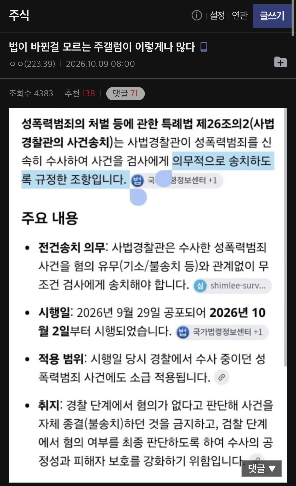
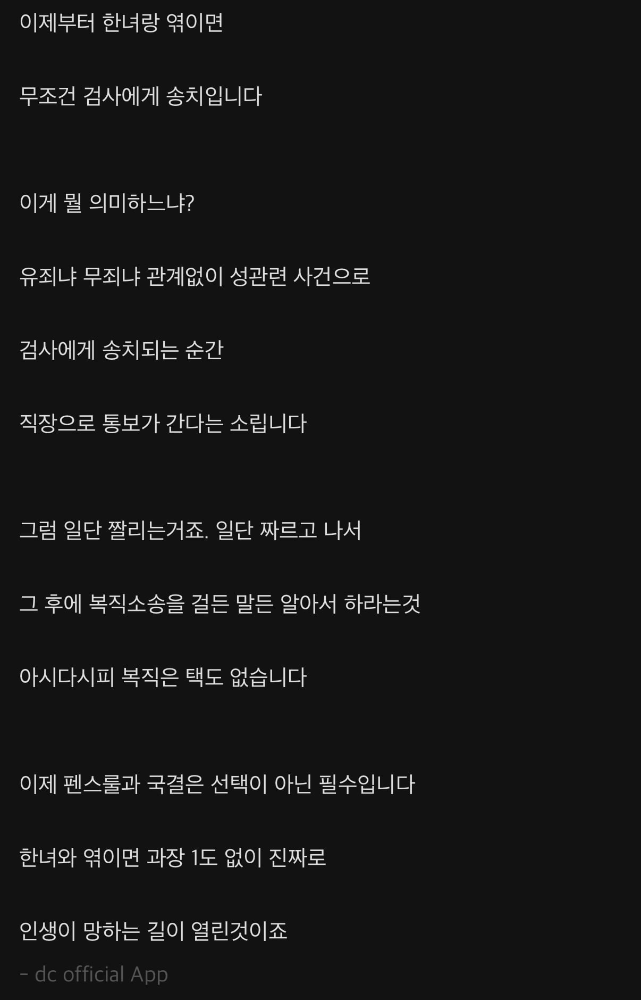

이거 진짜에요??? ㄷㄷㄷ


이거 진짜에요??? ㄷㄷㄷ
지원은 '해외여행 결격' 이거 들어간 모든 직장 다 보통 안됨
공기업, 공무원들은 어쨋든 좆된거 아녀 ㅋㅋㅋㅋ
대한민국 형사소송법 및 관련 법령상, 경찰이 사건을 검찰로 송치한다고 해서 일반 기업이나 직장에 자동으로 통보되거나 연락이 가는 시스템은 존재하지 않습니다.
개인의 형사 사건 진행 상황(수사 중이거나 송치된 단계)은 사생활 및 비밀 보호 원칙에 따라 본인 외에는 직장을 포함한 제3자에게 통지되지 않습니다. 공무원이나 군인, 교원 등 일부 특수 신분의 경우에만 법령에 따라 소속 기관에 통보 규정이 있으나, 이 역시 유죄 확정 전 단계에서 무조건 파면·해임되는 것은 아니며 별도의 징계 절차를 거칩니다.
근데 개붕이들 경찰수사 못 믿는다 이러지 않았음?
다이렉트로 검사한테 가면 좋은거 아니냐 ?
이젠 경찰말고 수사가 가능한 집단이 없지 않음?
검사는 기소밖에 못 하게 바뀌었잖음
그냥 헛소리 투성이라 어디서 부터 말해야 할지 모르겠는데,
검사한테 사건이 송치된다고 사기업에게는 통보 가지 않음. (공무원은 갈거고, 공기업은 잘 모르겠네)
공기업도 똑같음 일반적인건 안가는데 직무관련이랑 성범죄는 무조건 들어옴
근데 한국 사기업 환경에서 검찰 조사 받으러 다니면서 안 들킬 수가 있나?
공무원만 입건 단계에서 기관통보됨
사기업은 벌금형 나와도 회사에서 모른다
직장통보는 개소리고 바로 검찰로 가는건 좀 ㅂㅅ같은데
송치됐다는 사실만으로 기소나 유죄가 확정되는 건 아니야. 사진의 “무조건”은 사건을 넘기는 절차에 대한 설명이지, 신고 내용을 무조건 사실로 인정한다는 뜻은 아니야.
직장 해고는 별도로 판단해야 해. 일반적인 근로관계에서 회사는 정당한 이유 없이 근로자를 해고할 수 없어. 신고나 송치 사실 하나만으로 해고가 자동으로 정당해지는 것도 아니고, 실제 행위와 증거 등을 따져야 해. 다만 사업장 규모나 공무원 등 신분에 따라 적용 규정에는 차이가 있어. �
law.go.kr +1
네가 걱정하는 “억울하게 신고돼도 조사받고 직장에서 곤란해질 수 있지 않냐”는 문제는 따로 생각해야 해. 자동 해고 규정이 없다는 게 현실적인 불이익까지 전혀 없다는 뜻은 아니거든. 그렇지만 이 사진만으로 “신고하면 바로 해고된다”고 결론 내릴 근거는 없어.
또 상대방을 처벌받게 할 목적으로 거짓인 줄 알면서 허위 사실을 신고하면 무고죄가 문제될 수 있어. 반대로 신고된 사람이 무혐의나 무죄가 됐다는 이유만으로 신고자가 자동으로 무고죄가 되는 건 아니야. 허위 신고였는지와 고의가 있었는지를 별도로 입증해야 해.
구라에 사실하나 넣고
그래놓고 구라 섞였다고 하면‘어쨌든 사실이 있긴 있잖아’라고 지랄할 예정들임
공뭔은 1심만 잘못걸려도 좆되겠구만 ㅋㅋ
박봉에 휴가쪼개서 혼자 방어하거나 최소 300 깨서 변호사 사야하네?
ㅉㅉㅉ
딴건 몰라도 주갤발 정훈교육자료 보고 지랄하는 저능아들 없지?
근데 주갤애들은 왜케 한녀에 화가난거냐....
도태된 분노가 그리 큰가?
여자 기분에 따라 멀쩡히 잘 살고있던 남자 인생 실제로 조진 사례가 무수히 있기 때문에
정상적인 사람들이라면 그걸 가능하게하는 제도와 사람을 보면 분노하는게 정상이지
물론 한녀니 뭐니 싸잡아서 욕하는건 걍 지랄이고ㅇㅇ
방금도 유튜브보다가 30년근속 해경 무고당해서 파면된 영상 나오던데 ㅋ 감찰관 싸가지없는건 덤이고
이새끼들은 샴푸가 자궁까지 간다는 애들 비웃을 자격이 없음
무고죄만이라도 정상기능 했으면 벌벌떨일이없는데ㅋㅋ
애미뒤진 창녀들 덕분에 알아서 조심해야하는 세상이됐음
심지어 알아서 조심해도 운나쁘면 블루투스 추행으로 걸리는거알지?
보지민국에 태어났으면 감내해라 ㅋㅋ
직장 통보는 근데 공무원만 해당아닌가
공무원 군인 공기업 바로콜이고 대기업은. 입사시 뭐 뒷조사하는애들이닌깐 불법이건 아니건 개무시하고함 거기는 잘모르겠다
군인은 진짜 진급이고 뭐고 끝이자나
뭐 난 애초에 국결할 거라 스탑럴커는 상관없는데 텔레파시 강간으로 무고당할 수 있어서 안전하진 않긴 하지...
경찰보다 검찰이 수사하는게 나음 검사가 봤을때 말 안돼면 기각 시킴 이거 선동임 ㅋㅋ
ㅋㅋ 이딴글 놔둘거면 옳그떠 규정 지우지 활성화나 되게
???: 이상한 짓을 안하면 될 거 아냐 왜저랩??? 섹스못해 뒤진 귀신이라도 붙었나? ㄷㄷㄷ
보추가 뜨는 이유가 이거냐
필수 송치는 그뜻이 아니라
내사종결로는 끝낼수 없고 기소의견이나 불기소의견으로 종결하라는 뜻임
즉 경찰 선에서 뭉개지말고 검사 확인 받으라는 뜻
검사들 존나 빡쳐서 이제 걍 존나 기각 때릴거임. 예전에 통매음때도 별것도 아닌걸로 기소 때리면 기강 잡는다고 보충수사하라고 갈궜는데..
병신 똥글 붐업
전과있어도 들어가드라 ㅋㅋ